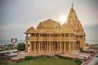
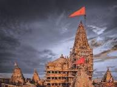

Somnath

The Somnath temple, also called Somanātha temple or Deo Patan,
is a Hindu temple located in Prabhas Patan, Veraval in Gujarat, India.
It is one of the most sacred pilgrimage sites for Hindus and is believed to be first among the twelve jyotirlinga shrines of Shiva.
It is unclear when the first version of the Somnath temple was built with estimates varying between the early centuries of the 1st-millennium to about the 9th-century CE.
The temple is not mentioned in ancient Sanskrit texts of Hinduism as Somnath nomenclature but the "Prabhasa-Pattana" (Prabhas Patan) is mentioned as a tirtha (pilgrimage site), where this temple exists.
Dwarka

The main draw for tourists coming to Dwarka, the Dwarkadhish Temple (Jagat Mandir), is believed to have been established more than 2500 years ago by Lord Krishna’s great grandson, Vajranabh.
The ancient temple has been renovated several times, especially leaving imprints of 16th and 19th centuries.
The temple stands on a small hill accessed by 50 plus steps, with heavily sculptured walls that cocoon the sanctum with the main Krishna idol.
Around the complex lie other smaller shrines.
The walls have intricately carved mythical characters and legends.